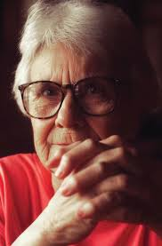

MC Books
The Online Book Store.
MC Books your best source to buy cheap book online, make online book purchase, making
us the best book website in India to read book online.Smashwords. If you want free books to read online that aren't just fiction, this is the website for you. Smashwords is an easy-to-use e-book site offering titles in various genres—you'll find everything from Christian fiction books, including poetry, classics, romance and biographies.
Online book store to buy Malayalam books, eBooks, audio books and movies that are published by publishers from Kerala state, free shipping in india.
Buy Books
List of Books
- To Kill a Mockingbird
.jpg) As a Southern Gothic novel and Bildungsroman, the primary themes of To Kill a Mockingbird involve racial injustice and the destruction of innocence. Scholars ...
As a Southern Gothic novel and Bildungsroman, the primary themes of To Kill a Mockingbird involve racial injustice and the destruction of innocence. Scholars ...
- The Great Gatsby
 The Great Gatsby is a 1925 novel by American writer F. Scott Fitzgerald. Set in the Jazz Age on Long Island, near New York City, the novel depicts
The Great Gatsby is a 1925 novel by American writer F. Scott Fitzgerald. Set in the Jazz Age on Long Island, near New York City, the novel depicts
- The Catcher in the Rye
The Catcher in the Rye is a novel by American author J. D. Salinger that was partially published in serial form in 1945–46 before being novelized in 1951.
- Harry Potter and the Philosopher's Stone
 The film stars Daniel Radcliffe as Harry Potter, with Rupert Grint as Ron Weasley, and Emma Watson as Hermione Granger. Its story follows Harry's first year at
The film stars Daniel Radcliffe as Harry Potter, with Rupert Grint as Ron Weasley, and Emma Watson as Hermione Granger. Its story follows Harry's first year at
- The Lord of the Rings
 The Lord of the Rings is a trilogy of epic fantasy adventure films directed by Peter Jackson, based on the novel The Lord of the Rings by British author
The Lord of the Rings is a trilogy of epic fantasy adventure films directed by Peter Jackson, based on the novel The Lord of the Rings by British author
- The Hobbit
 The Hobbit, or There and Back Again is a children's fantasy novel by the English author J. R. R. Tolkien. It was published in 1937 to wide critical acclaim,
The Hobbit, or There and Back Again is a children's fantasy novel by the English author J. R. R. Tolkien. It was published in 1937 to wide critical acclaim,
Legends
J. K. Rowling
Joanne Rowling born 31 July 1965), better known by her pen name J. K. Rowling, is a British author and philanthropist. She wrote Harry Potter, a seven-volume fantasy series published from 1997 to 2007. The series has sold over 600 million copies, been translated into 84 languages, and spawned a global media franchise including films and video games. The Casual Vacancy (2012) was her first novel for adults. She writes Cormoran Strike, an ongoing crime fiction series, under the alias Robert Galbraith.
Peter Jackson

Sir Peter Robert Jackson ONZ KNZM is a New Zealand film director, screenwriter and producer. He is best known as the director, writer and producer of the Lord of the Rings trilogy and the Hobbit trilogy, both of which are adapted from the novels of the same name by J. R. R. Tolkien.
Harper Lee

Nelle Harper Lee (April 28, 1926 – February 19, 2016) was an American novelist whose 1960 novel To Kill a Mockingbird won the 1961 Pulitzer Prize and became a classic of modern American literature. She assisted her close friend Truman Capote in his research for the book In Cold Blood (1966).[1] Her second and final novel, Go Set a Watchman, was an earlier draft of Mockingbird that was published in July 2015 as a sequel.
| Sl.No |
Book Title |
Author |
ISBN |
Price |
| 1 |
To Kill a Mockingbird |
Harper Lee |
9781408855652 |
500 |
| 2 |
The Catcher in the Rye |
J. D. Salinger |
780694524477 |
450 |
| 3 |
Harry Potter and the Philosopher's Stone |
J. K. Rowling. |
9780395551561 |
600 |
| 4 |
The Lord of the Rings |
Peter Jackson |
9789380005744 |
650 |
| 5 |
The Hobbit |
Peter Jackson. |
9780694524440 |
770 |